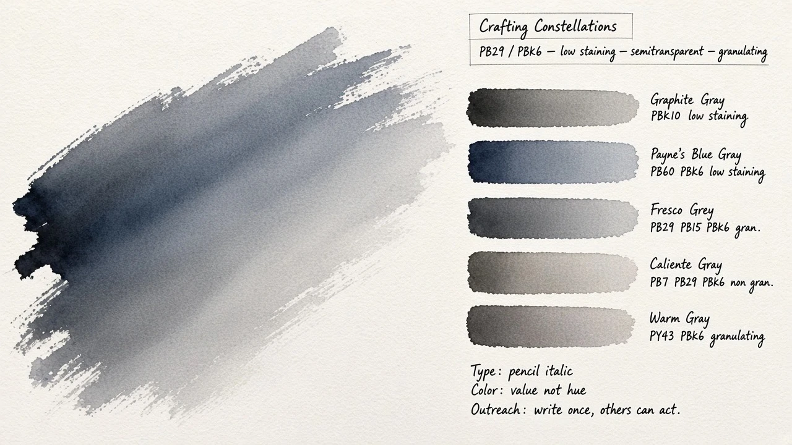
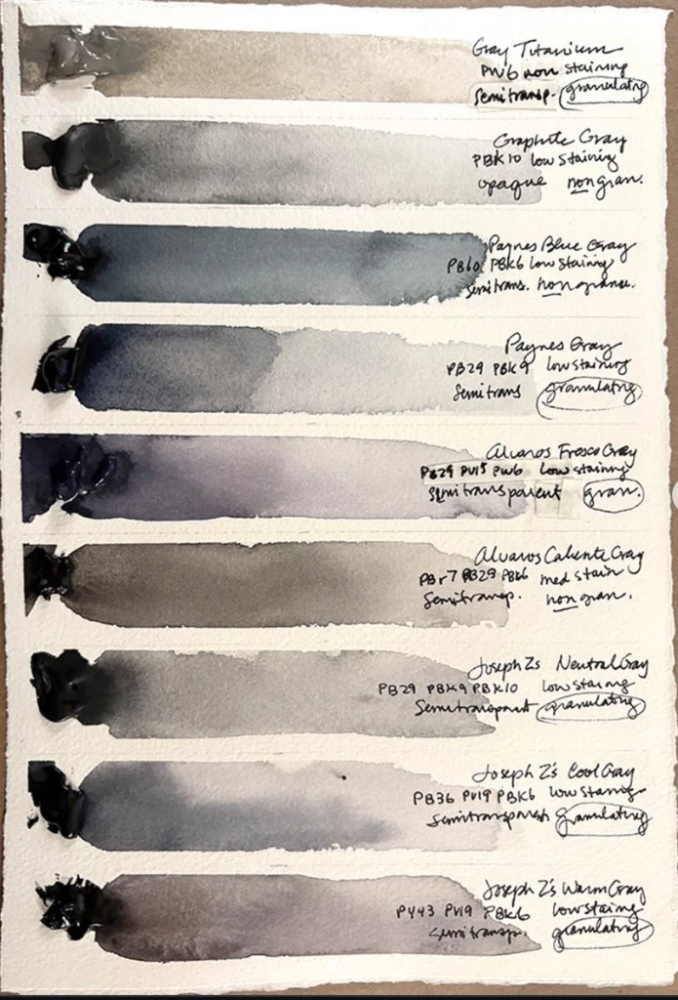

Crafting Constellations
The Value Study — four boards — 2026-10-10
Same world, four sheets.
Pick the one to build from, or the parts of each.
Boards
- 01 Study the comp at real scale · Kalam 300 Baseline. Wash left, caption plate, pigment rail, three system notes.
- 02 Sheet source sheet as interface · Nanum Pen Navigation as a pigment index. Darker wash, more important.
- 03 Outreach need / who can act / when · humanist italic The ask as ruled fields. Does the quieter voice read better for product UI?
- 04 Portrait phone first · the helper’s side · Kalam 300 What a friend sees from the family’s link. One action per need.
North-star stills — if a board and a still disagree, the still wins

